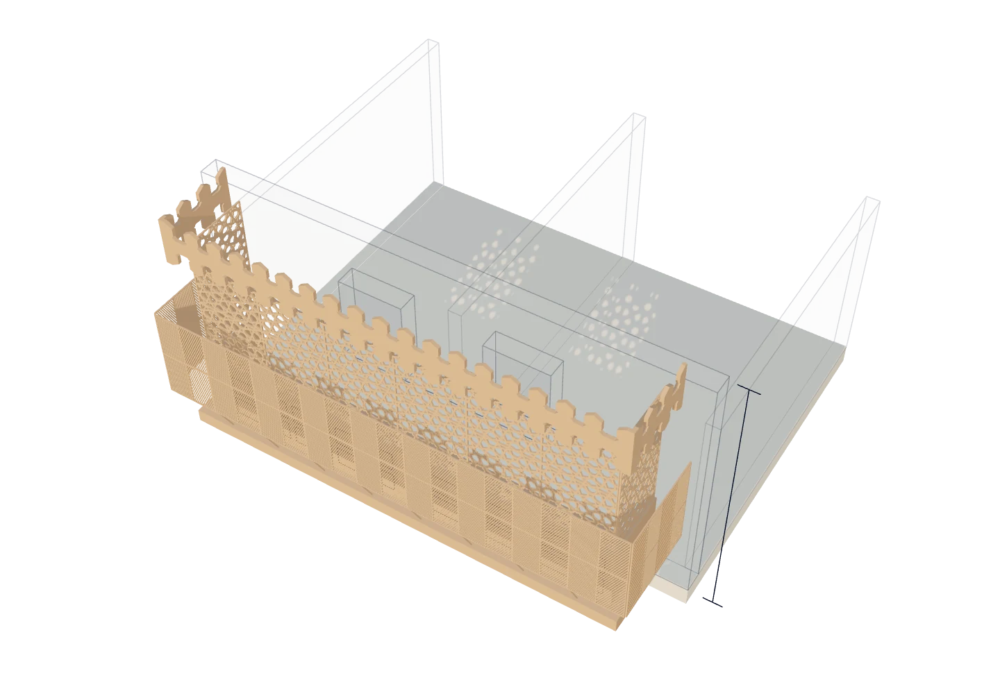
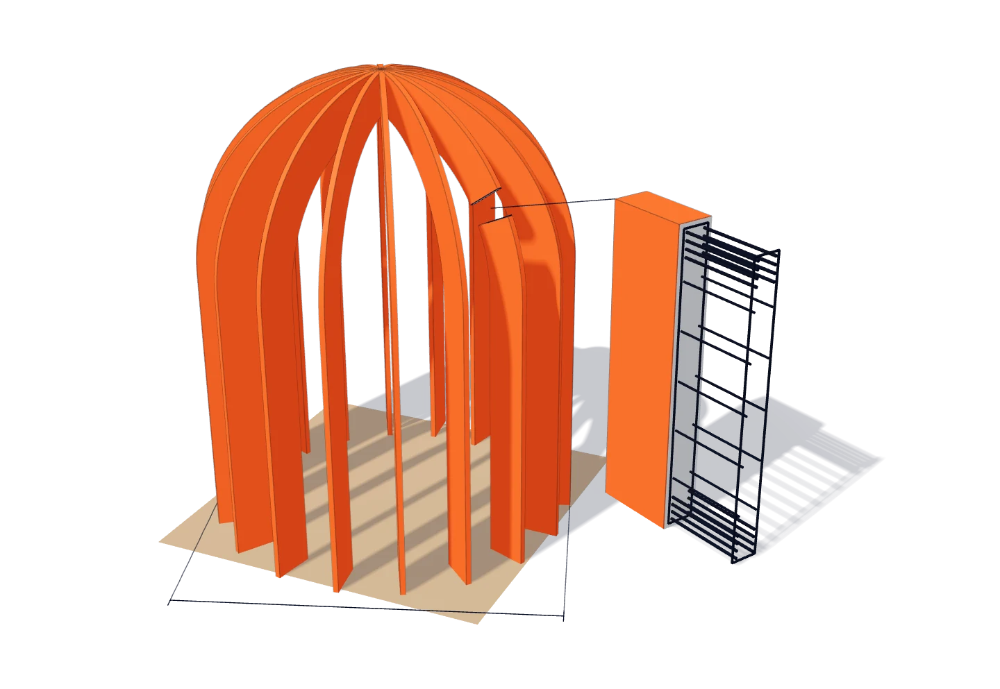
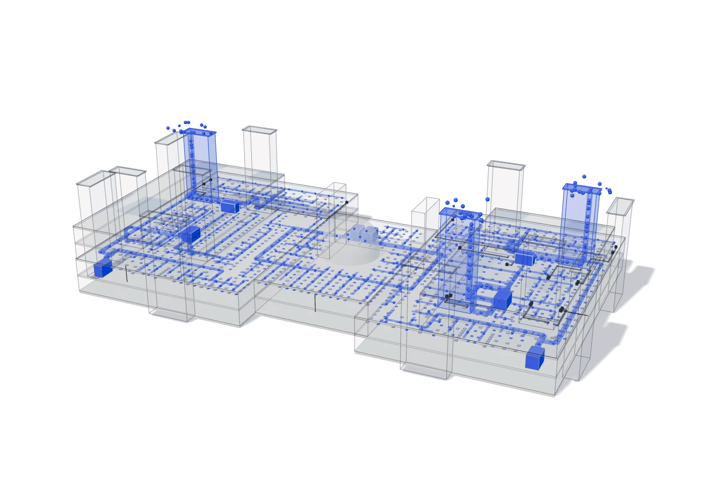
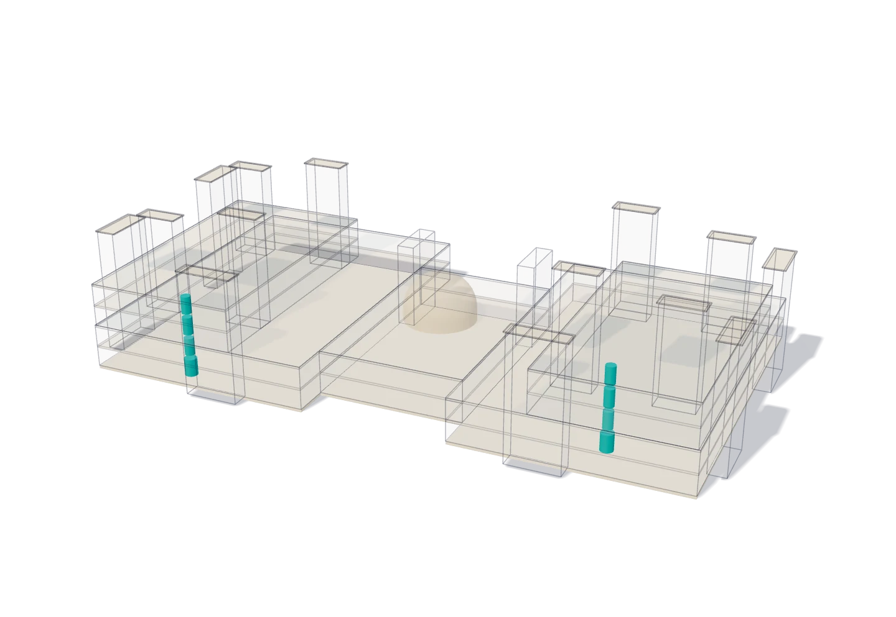
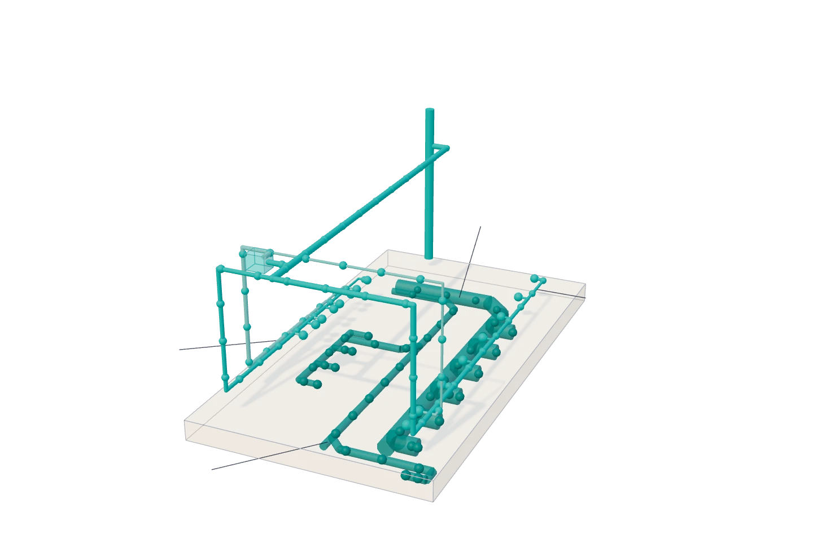
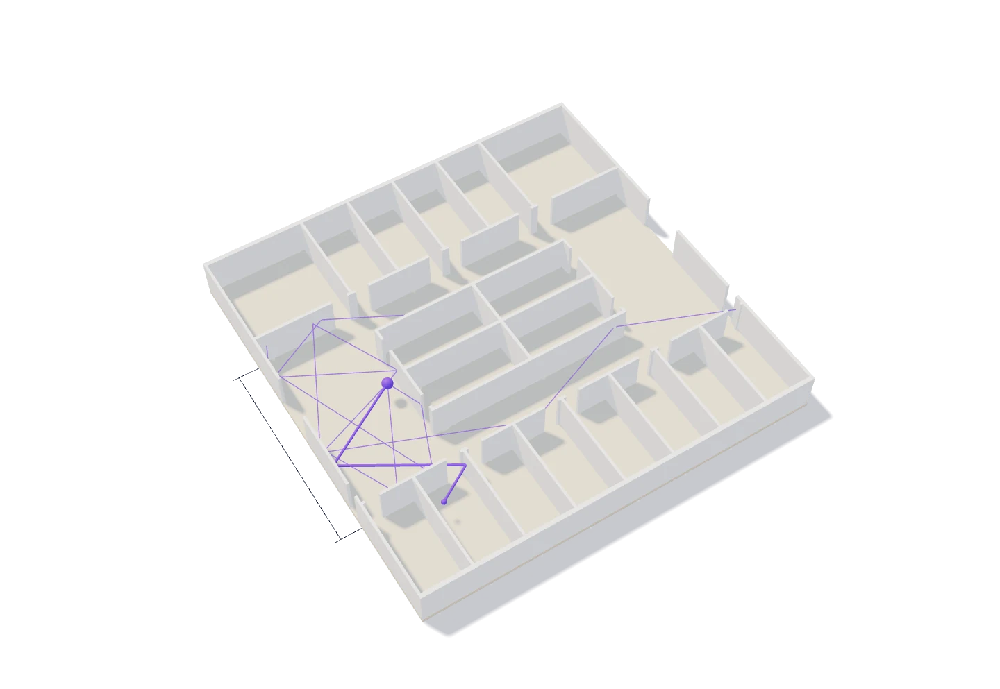
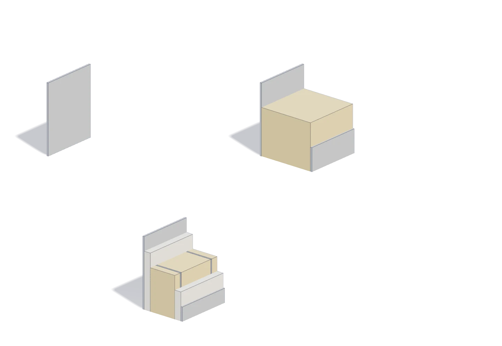

I work across the disciplines of a building and take each one to the number: structure and services sized by hand, rooms modelled for sound and light, buildings simulated for energy, a material tested in the lab, a real building measured with a team of six.
Education
Bachelor of Building Engineering, IAU 2026
GPA 4.25/5.0, with Honors
SCE-certified
Experience
ACKD ConsultProject engineer, Sep 2026 to present
ABHJ Engineering ConsultantsProject engineering intern, Jun to Aug 2026
AMKN Real EstateMarketing intern, Jul to Aug 2023
Software
Design and BIMRevit, AutoCAD, Navisworks, Rhino, Grasshopper, Lumion
StructureETABS, SAFE
Building performanceDesignBuilder / EnergyPlus, HAP, DIALux, ODEON
LabLinseis THB-100
Planning and dataMS Project, Excel (VBA), Power BI
A hospital campus of about 55,000 m², designed across every discipline. A museum carried by five structural systems. A dorm sized by hand. A ward modelled for speech and noise, a real building audited by a team of six, a fibre tested in the lab, and a patent-pending sensor.
H.E.R.O. is an emergency campus of about 55,000 m² for Hajj season in Muzdalifah. I designed it across every discipline: architecture, structure, MEP and fire, acoustics, lighting, energy and cost.
H.E.R.O. emergency hospital, Muzdalifah
≈55,000 m²
the campus, for Hajj season in Muzdalifah
−40.2%
site energy vs the Saudi code case, in simulation; −48.8% with solar panels added.
0.63 → 0.3
highest STI in the ward, from NC 30 to NC 45 (sheet A70)
Timber roshan screens give the wards daylight and privacy, shaded riwaq arcades protect pilgrims walking between sectors, and green roofs double as healing gardens and a thermal buffer.Local limestone and travertine cladding, for thermal mass and a material language drawn from Makkah.
A flat slab on drop panels and a dome of radial arched ribs carry it, analysed in ETABS, with the foundation in SAFE. Water, fire protection, power and lighting are worked out on the sheets, and a ward was modelled in ODEON for speech under HVAC noise.
Fresh air enters at the wind-tower tops, where it is less dusty and usually cooler by day. VRF at CoP 4.0 replaces chillers at CoP 1.5; alone, it cuts base-case site energy by 39.75%.
Studio
Design Studio 10 technical project (H.E.R.O. graduation capstone)
The H.E.R.O. campusTraced from the site plan of sheet A1 (drawn at 1:300): 19 building footprints in five groups, each raised to the spot level the sheet prints on its roof; the field hospital's roof level is the 5.7 printed on its section on sheet A24.Schematic in places; see Technical detail.
The site plan the campus is traced fromSite plan, drawn at 1:300 on sheet A1
Architecture
Timber mashrabiya and rawashin, not alloy panels, admit daylight while holding back direct solar gain.
A riwaq, a shaded pedestrian arcade along the ground floor, carries a green roof: with the mashrabiya, a second barrier against solar gain.
Light-coloured local stone reflects more solar heat than a darker facade and draws on Makkah's material context.

3.950mthermally modified woodward
Architecture: the roshan of sheet A27On one ward bay, 3.950 m from the foot of its brackets to the top of its crown: under a low sun the light through its lattice crosses the ward floor.Schematic in places; see Technical detail.
A flat slab with drop panels, chosen over a flat plate, a ribbed or waffle slab and a beam-and-slab system. The superstructure was analysed in ETABS and the foundation in SAFE, in 40 MPa concrete and 420 MPa steel.
At the centre, a dome of 18 radial arched ribs spans 14.4 m; all frame elements are designed to SBC 304.

14.4 m200 × 1600 mm8Φ1610Φ128Φ16
The H.E.R.O. hospital, with its dome lifted off (exploded view)Each storey's columns stand where its framing plan draws them (sheets A33 to A36), at the schedule sizes of sheet A37; the flat slabs and their drop panels follow the same plans, at the floor levels printed on the sections of sheet A24; the dome is 18 ribs over a 14.4 m span (sheets A36 and A40).Schematic in places; see Technical detail.
Fresh air is taken in at the wind-tower tops, where it is cooler and less contaminated: a lower cooling load and less dirt on the filters. Fresh-air handling units supply 100% fresh air, and VRF outdoor units with a high CoP carry the cooling load.

FAHU1FAHU2FAHU3plant floorfresh airAHU1AHU2AHU4AHU5AHU3SUPPLY DIFFUSERRETURN DIFFUSEREXHAUST FAN
HVAC: fresh air down the malqaf towers, supply air through the ductsFresh air comes down the three malqaf towers to the fresh-air handling units; from these, by the plant-floor ducts of sheet A43, and from the air handling units, the supply ducts of sheet A42 branch across the first floor to its supply diffusers (not to scale).Schematic in places; see Technical detail.
Fixture units add up floor by floor on two stacks: 63 mm risers above the first floor, 82 mm below it. Demand is 186 beds at 200 gallons a day, stored for two days in an underground tank with 3 m of water. The pump works out at 3.06 kW and is taken as 3.7 kW.

Left side stack119.2563mm119.2563mm213.7563mm420.7582mmRight side stack119.2563mm119.2563mm186.7563mm399.7582mm
Plumbing: the two stacks of sheet A52Fixture units adding up floor by floor on the two stacks of sheet A52, with the riser diameter printed beside the bands. Schematic, not to scale: the pipes are drawn far thicker than they are, and where the stacks stand in the building is not on the sheets.
Fixture units and pipe diameter in each band of the two stacks, as labelled on the riser diagram of sheet A52.
Stack
Between floor lines
Fixture Unit
Pipe Dia
Left side stack
Roof - 3rd Floor
119.25
63mm
Left side stack
3rd Floor - 2nd Floor
119.25
63mm
Left side stack
2nd Floor - 1st Floor
213.75
63mm
Left side stack
1st Floor - Ground Floor
420.75
82mm
Right side stack
Roof - 3rd Floor
119.25
63mm
Right side stack
3rd Floor - 2nd Floor
119.25
63mm
Right side stack
2nd Floor - 1st Floor
186.75
63mm
Right side stack
1st Floor - Ground Floor
399.75
82mm

Water Supply LayoutSewage System LayoutCW SUPP STACKEWHØ40mm AF/C CWØ20mm CWØ25mm HWØ110mm SPØ50mm WP
Plumbing: from the stack to the fixturesThe toilet block of sheet A51 close up: cold water runs from the stack to every fixture and to the EWH, hot water from the EWH to the five lavatories, and the soil and waste pipes run back under the floor to where the sheet breaks them off (not to scale).Schematic in places; see Technical detail.
Beds186 beds
Per bed200 gallons a day
Water demand37,200 gallons a day
Storage2 days
Water depth in the tank3 m
Pump, calculated4.10 hp = 3.06 kW
Pump, taken5 hp / 3.7 kW
H.E.R.O. capstone report, sheets A52 (riser) and A53 (demand, storage and pump), pp. 59–60
The remote area of 151 m² at 4.0 L/min/m² needs 604 L/min, which comes to nine sprinklers. With a hose stream of 379 L/min the demand is 983 L/min, held for 30 minutes.
Fire: the remote area and its water demandFire water demand as calculated on sheet A59: nine sprinklers over the remote area, then the sprinkler flow and the hose stream added up. Schematic, not to scale: the sheet prints the area and the count, not this layout, and the pipes and heads are drawn thicker than they are.
Remote area151 m²
Density of flow4.0 L/min/m²
Flow for sprinklers604 L/min
Number of sprinklers604 / 75 = 8.05
Taken as9 sprinklers
Hose stream allowance379 L/min
Required flow983 L/min
Design duration30 min
H.E.R.O. capstone report, sheet A59 (details and calculation), p. 66
Power is tabulated panel by panel on sheet A48: a main board, MDB, and eight branch panels for lighting, sockets, power and cooling, each with its circuits, phase totals and demand.
Electrical: from the transformers to the distribution boardsDrawn from sheets A44 to A49: the supply comes in by the trench marked MV, passes the two transformers to the main board MDB and rises on its cable ladder to the tray and the seven distribution boards of the first floor, with the generator, the UPS and the batteries in the next room.Schematic in places; see Technical detail.
Show the full tableShow fewer rows
Main panel MDB, load classification as printed on sheet A48.
Lighting was checked in DIALux, space by space: 26 spaces with their working-plane illuminance, under artificial light, daylight and both, with and without shading.
During the capstone I took the acoustical modelling elective (BSTC-582) and used it to judge the hospital acoustically. In a ward, HVAC noise masks speech and alarms, so one ward was modelled in ODEON at three noise levels: NC 30, NC 35 and NC 45.
STI, NC 45: ODEON grid map of the ward (sheet A70)Model view, with its own rulers in metresEDT at 500 Hz, NC 30: ODEON grid map of the ward (sheet A67)Model view, with its own rulers in metresEDT at 500 Hz, NC 35: ODEON grid map of the ward (sheet A67)Model view, with its own rulers in metres
EDT at 1000 Hz, NC 30: ODEON grid map of the ward (sheet A67)Model view, with its own rulers in metresEDT at 1000 Hz, NC 35: ODEON grid map of the ward (sheet A67)Model view, with its own rulers in metres
EDT at 1000 Hz, NC 45: ODEON grid map of the ward (sheet A67)Model view, with its own rulers in metresEDT at 2000 Hz, NC 30: ODEON grid map of the ward (sheet A67)Model view, with its own rulers in metres
EDT at 2000 Hz, NC 45: ODEON grid map of the ward (sheet A67)Model view, with its own rulers in metresT30 at 500 Hz, NC 30: ODEON grid map of the ward (sheet A68)Model view, with its own rulers in metres
T30 at 1000 Hz, NC 35: ODEON grid map of the ward (sheet A68)Model view, with its own rulers in metresT30 at 1000 Hz, NC 45: ODEON grid map of the ward (sheet A68)Model view, with its own rulers in metresT30 at 2000 Hz, NC 35: ODEON grid map of the ward (sheet A68)Model view, with its own rulers in metres
C50 at 500 Hz, NC 30: ODEON grid map of the ward (sheet A69)Model view, with its own rulers in metresC50 at 500 Hz, NC 35: ODEON grid map of the ward (sheet A69)Model view, with its own rulers in metres
C50 at 500 Hz, NC 45: ODEON grid map of the ward (sheet A69)Model view, with its own rulers in metresC50 at 1000 Hz, NC 30: ODEON grid map of the ward (sheet A69)Model view, with its own rulers in metres
C50 at 1000 Hz, NC 35: ODEON grid map of the ward (sheet A69)Model view, with its own rulers in metresC50 at 1000 Hz, NC 45: ODEON grid map of the ward (sheet A69)Model view, with its own rulers in metres
C50 at 2000 Hz, NC 30: ODEON grid map of the ward (sheet A69)Model view, with its own rulers in metresC50 at 2000 Hz, NC 35: ODEON grid map of the ward (sheet A69)Model view, with its own rulers in metres
C50 at 2000 Hz, NC 45: ODEON grid map of the ward (sheet A69)Model view, with its own rulers in metres
Sheet A68 prints no T30 map at 2000 Hz for NC 30: the picture in that place is the 1000 Hz map again.
The noise-criteria report finds EDT and T30 unchanged from NC 30 to NC 35. What changes is speech transmission: the highest STI in the ward is 0.63 at NC 30, 0.54 at NC 35 and 0.3 at NC 45 (sheet A70).
STI summary, as printed on sheet A70.
Scenario
Max STI Value
Average Room STI
Intelligibility Rating
NC 30
0.63
0.25 – 0.45
POOR (Reaches GOOD at Station)
NC 35
0.54
0.15 – 0.30
BAD (Reaches FAIR at Station)
NC 45
0.3
0.05 – 0.10
BAD
NC-30, NC-35 and NC-45: the level in each octave band from 63 to 8000 Hz, in dB, as entered in ODEON (sheet A66).
Show the full tableShow fewer rows
NC
63 Hz
125 Hz
250 Hz
500 Hz
1000 Hz
2000 Hz
4000 Hz
8000 Hz
NC-30
57
48
41
35
31
29
28
27
NC-35
60
52
45
40
36
34
33
32
NC-45
67
60
54
49
46
44
43
42
Sound in the ward

nurse stationward48,359 rays14.2m
Acoustics: the ward of sheet A65Illustration of ray tracing in the ward of sheet A65: rays leave a source at a nurse station, reflect off the walls of the open inpatient area, and one reaches a patient room. The reports print 48,359 rays; the paths drawn here are not a result, and the plan is simplified. Walls at the printed clear height of 2.8 m; the 14.2 m line is the printed width of the open inpatient area.
The ward plan on sheet A65: ward rooms on both sides of an open inpatient areaWards plan, sheet A65: no scale printed at the drawing
Three receivers
A second report follows the sound from one nurse station to three single receivers. T30 at 1000 Hz is approximately 1.18 s, 0.84 s and 0.86 s, against the 0.8 s target the report names; its 3D reflection paths show which surfaces send the late reflections.
From the same course, a separate study by a group of two: three walls between hotel guest rooms compared in ODEON. The stud partition gives the largest A-weighted reduction, 40.4 dB(A), against 33.0 for the sandwich panel and 18.4 for the single sheet. The transmission-loss inputs are engineering estimates, not laboratory data.

Case 11.0 mmSingle aluminium sheet, 1.0 mmCase 2103 mm1.5 mm Al100 mm rockwool (assumed)1.5 mm AlCase 377 mm1.0 mm Al12.5 mm gypsum50 mm metal-stud cavity with rockwool12.5 mm gypsum1.0 mm Al
The hotel walls: three build-ups, group of twoThe three walls of the study, layer by layer, to their printed thicknesses (Table 3 of the report). Schematic, not to scale: one scale for all three, but the 1.0 and 1.5 mm sheets are drawn thicker so they can be seen; the studs are symbols, and each piece's width and height are not from the report.
Aluminium sheet18.4
Sandwich panel33.0
Stud partition40.4
A-weighted level reduction between the rooms, ΔLA in dB(A) (Table 7).
Aluminium sheet40.5
Sandwich panel25.9
Stud partition18.5
A-weighted level at the receiving-room receiver R4, in dB(A), from the same 58.9 dB(A) in the source room (Table 7).
+22.0 dB for the stud partition over the single sheet (Table 7, column 'vs Case 1, dB').
Octave-band level reduction, R1 − R4, in dB (Tables 9 and 12 to 14). At 63 Hz the order of Case 2 and Case 3 is reversed: the report's 63 Hz crossover.
Show the full tableShow fewer rows
Octave band, Hz
Case 1
Case 2
Case 3
63
2.9
28.6
20.6
125
5.3
21.8
25.8
250
12.0
28.3
33.9
500
20.3
34.2
43.7
1000
25.6
35.5
48.7
2000
32.2
32.5
53.3
4000
39.2
45.6
58.3
8000
46.0
55.1
62.5
Hotel-wall report (ODEON, group of two), pp. 16–31
The best case uses 40.2% less site energy than the SBC case: 254.75 vs 425.86 kWh/m².
With 816 PV panels (383.5 kWp): 218.17 kWh/m², 48.8% below the SBC case.
Academic LEED assessment: 18 of 18 on Optimize Energy Performance, against the studio base case.
Four simulated cases of the hospital model: site energy per total building area (sheets A60, A61, A63 and A64). The percentages are against the SBC case; the base case is shown for context.
Structural, ETABS 3D model of the hospital, H.E.R.O. capstone report, p. 33Model view, not to scaleStructural, SAFE displacements, foundation plan view, H.E.R.O. capstone report, p. 33Model view, not to scaleThe two-room ODEON model of the hotel-wall study, group of two (Figure 2 of the report)Model view, not to scaleGround floor, sheet A2Ground floor, drawn at 1:150 on sheet A2Site plan, sheet A1Site plan, drawn at 1:300 on sheet A1Sections, sheet A24Emergency hospital section a-a 1:150, drawn at 1:150 on sheet A24
DocumentsH.E.R.O. capstone reportOpenH.E.R.O. energy sheets A60–A64OpenH.E.R.O. drawing setOpenAcoustics: hospital ward, noise criteria (ODEON)OpenAcoustics: hospital ward, receivers and reflections (ODEON)OpenAcoustics: hotel guest-room walls (ODEON, group of two)Open
Technical detail +Technical detail −
Apply the lens, H.E.R.O. design and energy
Academic, individual, Design Studio 10 technical project (H.E.R.O. graduation capstone), 2025/2026, campus ≈55,000 m², covering architecture, structure, MEP and fire, acoustics, lighting, energy and cost, DesignBuilder
The best case uses 40.2% less site energy than the SBC case: 254.75 vs 425.86 kWh/m².
With 816 PV panels (383.5 kWp): 218.17 kWh/m², 48.8% below the SBC case.
Site-energy change vs the studio base case, each measure alone; not additive. Sheets A61–A62.
Measure, applied alone to the base case
SBC level
Best level
HVAC
−18.17%
−39.75%
Lighting
−11.21%
−23.48%
Roof
−5.30%
−6.66%
Wall
−1.32%
−3.21%
Glazing (+ shading at best level)
−0.42%
−0.71%
Emergency hospital model, ≈17,725 m². Base case shown for context only; percentages are against the SBC case.
Sheets A60, A61, A63, A64.
DesignBuilder model of the hospital. Sheet A60.Model view, not to scale
DesignBuilder, annual simulation, hospital model ≈17,725 m² (11,251,564.23 kWh ÷ 634.80 kWh/m², sheet A60), occupancy 15 m²/person, 24x7 at 50%, base: CAV with chillers CoP 1.5, halogen 35 W/m², clear 6 mm glazing U 5.778, SBC case as defined by the studio on sheet A61, best: VRF CoP 4.0, LED 15 W/m², glazing U 0.831
Design decisions behind the numbers
Passive
Timber mashrabiya and rawashin, not alloy panels, admit daylight while holding back direct solar gain.
A riwaq, a shaded pedestrian arcade along the ground floor, carries a green roof: with the mashrabiya, a second barrier against solar gain.
Green roofs add a layer against roof heat gain and give patients and staff planted space, which matters in a hospital.
Light-coloured local stone reflects more solar heat than a darker facade and draws on Makkah's material context.
The malqaf towers carry the intake ducts of the fresh-air handling units and draw outdoor air in at their top, where it carries less dust and, by day, is usually cooler than at street level, to cut the cooling load on the fresh air and the filter maintenance.
Active
The second floor of each side wing, left unoccupied between the first floor and the third-floor wards, is the plant floor for the fresh-air handling units a hospital needs and for the VRF outdoor units.
VRF at a CoP of 4.0 replaces the base case's CAV chillers at CoP 1.5; on its own, the HVAC measure saves 39.75% against the base case, the largest single measure in the table above.
Apply the lens, H.E.R.O. LEED
Academic LEED assessment: 18 of 18 on Optimize Energy Performance, against the studio base case.
Against the SBC case, before PV: 40.2%, which scores 15 of 18 on the same scale.
Credit
Points
Basis
Optimize Energy Performance
18 of 18
59.9% energy-cost saving vs studio base case, before PV; 50% earns 18
Renewable Energy
4 of 5
15.1% on-site: 682,037 kWh generated ÷ 4,515,270 kWh best case before PV
LEED BD+C calculator, sheet A64.
Rooftop PV in the DesignBuilder model. Sheet A64.Model view, not to scale
What is schematic
The H.E.R.O. campus
Schematic: every volume is a straight block down to the ground, the hospital's upper blocks and its dome are placed from the hospital's own sheets and the dome's curve is simplified, the parking building's ramped decks are one flat top, and the ground is one flat slab.
The names are those the drawing set prints for each group on its own sheets. The dimension line carries the 195.0 m that sheet A1 prints along that side of the site.
Architecture: the roshan of sheet A27
Schematic: that it stands on this ward bay, the sill and head of the two windows behind it (their place and width are measured on the ward plan of sheet A65), the sun's position and so where the light falls, and the thickness of the lattice, the slats and the dado's side boards; the lattice and slat panels are scaled into the cells of the 1:50 elevation.
The H.E.R.O. hospital, with its dome lifted off (exploded view)
Schematic: slab tops sit on the level tags, each framing plan's columns are taken as the ones under its slab, the outer-line columns shown on sheet A30 but not on the first-floor framing plan (sheet A33) are drawn up to the first-floor slab, stair and lift wells are not cut out, beams and core walls are left out, the height the dome is lifted is a choice of the drawing, and the cut piece is drawn larger than the rib (on a phone its bars are also drawn thicker than they are).The H.E.R.O. dome: 18 ribs over a 14.4 m span (sheets A36 and A40), schematic.
The dome's legs run through the roof down to the hall floor (Section A-A on sheet A24); the dashed ring marks where the dome passes through the roof. One rib is cut open with the cross-section sheet A40 draws: 200 × 1600 mm, with 8Φ16 top and bottom and 10Φ12 on the sides.
HVAC: fresh air down the malqaf towers, supply air through the ducts
Schematic in the first part, after sheets A22, A41 and A43, not to scale (on a phone the intake ducts and the fresh-air dots are drawn twice as wide): the dots stand for the air, and how they gather round a tower head is the graphic's own.Schematic in the second part: the level of every duct, of the diffuser squares and of the exhaust lines, and the height of the air handling units (the plans print none of these; the duct levels are read on the elevation picture of sheet A41), the five ducts through the floor (sheets A42 and A43 draw the same crossed rectangle at the same place with the same printed size, but no name and no level), the joints between straight ducts (laid along their centre lines, not along the drawn elbows and tees), the 43 ducts that carry no size string (width measured on the drawing, height taken from the duct next to them), the lines to the exhaust fans (the sheet draws a single line without a size, and its legend names the fan, not the line), and the dots that stand for air.So that they stay visible, ducts narrower than 0.5 m are drawn 0.5 m wide, the diffuser squares at twice their drawn size, and each exhaust fan (an arrow head 0.36 m across on the sheet) as a block 0.6 m across; on a phone only the ducts at least 400 mm wide are drawn, at least 0.9 m wide, without diffusers, exhaust lines and exhaust fans.
Sheet A42 draws no return duct, only return diffusers; the only magenta runs of sheet A43 are the three 900x900 runs the first part reads as fresh-air intakes (the legend names no supply, return or fresh-air duct), and the drawing set holds no HVAC layout for the ground floor or for the floors above the plant floor, so no duct is drawn there; the flexible ducts between a duct and its diffuser are left out, and so are the 28 yellow outlet squares of sheet A42, which its legend does not name.
Plumbing: from the stack to the fixtures
Schematic: where the stacks stand (the one beside the block is drawn where the supply pipe of A51 ends at its break line), which of the two feeds the block, and that the stack A51 names CW SUPP STACK is one of the two stacks of A52, which no sheet says; the floor, which A51 does not print and which was found by matching its underlay to the first-floor plan A4 (the ground- and third-floor plans draw the same block, and no sheet says whether the layout holds there too); the heights of the pipes above and below the floor, apart from the 2.3 m drop at the cold-water risers; the piece of floor, the box at EWH, the size of the short stubs and branches that carry no printed size, the moving dots and the lighter tint of the hot-water pipes. A51 draws no flow arrows: the direction of the water follows its tables, which add the fixture units up from the far fixture towards the stack (cold) and the EWH (hot), and that of the drainage follows the slanted entries of the branches, which point to the break lines. The waste pipe is drawn with the 50 mm printed beside it; the legend of A51 prints 82 mm. The pipes are drawn 3 times thicker than printed (4 times on a phone).
Not on the sheets, and left out: the place of the shaft in plan, the soil, waste and vent stacks through the floors, and the pipes of any other block or floor. Drawn on A51 and not shown: the vent pipe, the gate valves and the parts it marks MFT.
Electrical: from the transformers to the distribution boards
Schematic in the electrical graphic: every height (walls cut low, equipment as plain boxes, the boards on their walls, the level of the high tray and of the first-floor tray, the trench shown lying on the floor, the short upright above MECH DB1), the thickness of the runs and floors, the boards standing out of the wall face (the schedules of sheet A48 print Mounting: Recessed), the place of the 11.1 m dimension line (the sheet draws it inside the room), and the dots. The sheets draw the runs, not a direction: the dots run in by the trench, past the transformers to the MDB, and from the MDB back along the tray to the SDB and up the cable ladder to the first-floor tray, which is the graphic's own reading of the drawn route and of the schedule of sheet A48 (seven of the eight branch-panel schedules print Supply From: MDB, the SDB among them); the short run to the RMU carries no dot. Read by eye on the 3D view of sheet A49: that the run is a trench up to the symbol on it and a high tray beyond, and that the cable ladder rises from the MDB to the first-floor tray (sheets A47 and A45 draw the same symbol at the same place; no section draws the rise).
The sheets draw no single-line diagram, no changeover between mains and generator, and no sheet says what the generator, the UPS or the batteries feed (A47 draws a trench from the crossing to the generator and on to the UPS, and no run to the batteries), and the report describes none, so the generator, the UPS and the batteries stand where sheet A47 draws them, without a pulse. Sheet A45 names one board, MECH DB1, the only one a sheet ties to a branch of the tray; the other six stand where sheets A46 and A44 name them. A45 draws three board symbols without a name at the ends of the second, third and fourth branch, where no other sheet draws a board, and none where A46 names ESDB1, CSDB3 and CSDB2: those three symbols are not drawn, so these branches end at the bare wall, and no sheet says which board the other branches serve. Drawn on sheet A45 and not shown: the upright symbol at the ends of the second to seventh branch (no sheet ties them to a named board) and the short run from the corridor tray that joins the first branch. On sheet A47 the words METERING SWITCH GEAR stand beside the outline that holds the letters SB, without a leader, and the letters MV are printed on the line of the site plan, which reaches the south wall within a metre of the trench of the room plan: both ties are readings of the sheet.
Two windows that soil at different rates
Fig. 2: no scale printed at the drawing
02Patent
Patent pending
Year2026RoleSole inventor, self-filed
I invented a heat sensor that knows when it's dirty, and corrects itself.
20
claims, in three independent lines
Radiant heat, not air temperature, decides whether an outdoor space is usable on a summer afternoon. And in dust, the sensors that measure it slowly go blind without saying so.
Two windows gather dust at different rates. Comparing them separates dust from cloud, so the sensor corrects its own reading: no lamp, no motor, no cleaning.
It measures how much radiant heat on a person comes from the canopy overhead, and the usable hours a lighter, higher or ventilated canopy would give. It also measures its own thermometer error instead of assuming it away.Self-filed in Arabic through the SAIP portal, without a lawyer.
Filing
Saudi Authority for Intellectual Property, Application SA 1020268060, Filed 11 September 2026, Sole inventor, self-filed
The sensor: two aperturesIllustration after Figs. 2 and 3 of the case study, not to scale: two apertures, one substantially horizontal and one inclined, soil at different rates; the ratio of the two channels drifts, and each vertical recovery is a rainfall event. The case study prints no values for either figure; the dust dots are added.
How it works, in the case study's words
01
This apparatus carries two optical channels whose apertures soil at deliberately different rates — by a difference in inclination, in bore depth-to-diameter ratio, or in surface treatment.
Fig. 2 — The first aperture (122) lies substantially horizontal; the second (126) is inclined, so dust settles on it more slowly.
That cancellation is the invention: the ratio is blind to cloud and to absolute calibration, and responds only to the two apertures soiling at different rates.
Fig. 3 — The ratio drifts as the apertures soil unequally. Each vertical recovery is a rainfall event detected and reset automatically.
A view factor is computed with respect to a reference human body at a defined height, and from it a separable attribution term: the share of mean radiant temperature for which that specific structure is responsible.
Fig. 4 — The bounded field of view (142) of the upward channel is filled by the underside (310) of the overhead structure (300). The view factor is taken with respect to a reference body (330), with the ground (320) contributing separately.
Attributing radiant load to the structure that caused itFig. 4 of the case study, redrawn; not to scale
The overhead structureThis is whyOnce a canopy is up, there is no instrument in the field that can say how much of the remaining discomfort that canopy is responsible for, or whether a lighter, higher or ventilated one would do better.
The undersideOccupies a large fraction of the upper hemisphere a person exchanges radiation withThis is whyIn service it can run far above air temperature
A compact instrumentFor the radiant thermal environment of outdoor spaceThis is whyBuilt to be bolted to a pole, a bench, a lighting column or the underside of a shade canopy and then left alone, in dust, for years
The bounded field of view of the upward channelIs filled by the underside of the overhead structureThis is whyExisting instruments report one aggregate figure for mean radiant temperature.
A reference bodyA view factor is computed with respect to a reference human body at a defined height, and from it a separable attribution termThis is whyThe share of mean radiant temperature for which that specific structure is responsible.
The groundContributing separatelyThis is whyLong-wave emission from hot ground and façades
04
The gradient between it and the central sensor measures the conductive flow directly, and the correction follows from the known conductance of the support.
Fig. 5 — The sphere (162), the central sensor (164), the probe support (166) and the support-mounted sensor (168) from which conduction is measured.
Patent case study: dust-compensated radiant exposure sensor, pp. 3–6
DocumentsPatent case study: dust-compensated radiant exposure sensorOpen
Technical detail +Technical detail −
Innovate, patent pending
Air temperature is the published number, but mean radiant temperature, not air temperature, decides whether an outdoor space is usable in the afternoon.
The instruments that could measure it read the sky through an optical window; in an arid climate that window loses transmittance to settled dust, and the instrument reports a falling number it cannot tell apart from a dimmer sky.
Where a shade canopy stands overhead, I found no field instrument that can say how much of the remaining discomfort the canopy is responsible for.
S₁ = k₁·r₁·t₁·ES₂ = k₂·r₂·t₂·E
E incident irradiance, k, r fixed instrument constants, t transmittance of each window
E cancels out of the ratio. R is blind to cloud and to absolute calibration and responds only to the two windows soiling at different rates. That cancellation is the invention.
The mechanism in four lines (illustration)
Condition
Flat window
Inclined window
What the ratio says
Clean
100
100
The two channels hold a fixed relationship.
Cloud
50
50
Both fall together; the ratio is unchanged, so no correction is applied.
Dust
80
90
They diverge. Cloud cannot do this; only unequal soiling can.
Correction
—
—
The flat window soils at twice the rate, so the 10-unit gap means 20 lost from it and 10 from the other. Reported irradiance: 100, not 80.
Independent claim 1
Two windows, neither ever cleaned
Two optical channels have windows that soil at deliberately different rates, by inclination, bore depth or surface treatment. Both are left to soil, and no clean reference exists anywhere in the system. Fitting the drift of their ratio recovers the dust loss, which then corrects the reading. A step back in the ratio marks a rainfall event and resets the model; beyond the fit's valid range, the correction is withheld, the channels are flagged and a service request is sent. The added hardware is one photodiode.
Independent claim 2
Which structure is causing the heat
An upward infrared channel with a bounded field of view, a half-angle of not more than 35°, is filled by the underside of an overhead shade structure and reads that surface alone. A view factor to a reference human body turns the reading into that structure's share of mean radiant temperature. Dependent claims convert the share into usable hours per day, and into how those hours would change with a different emissivity, height or ventilation. No image is formed at any stage.
Independent claim 3
The thermometer's own error, measured
Mean radiant temperature comes from a globe thermometer, and a small globe's sensor sits on a support that conducts heat between the sphere and the ambient air. A second sensor on that support measures the conductive flow directly, so the error is corrected from the support's known conductance instead of assumed away. A dependent claim estimates the globe's time constant from the same pair of readings and corrects for lag.
11 Sep 2026
Filed at SAIP, application SA 1020268060; filing date secured.
Sep 2026
First formality examination; formal requirements under response.
Sep 2027
End of the Paris Convention priority year: the decision point for international filing.
≈ Mar 2028
Publication, 18 months from filing.
2029–2031
Substantive examination: novelty, inventive step and industrial applicability.
Pending, not granted. The examiner's likeliest test is inventive step: whether replacing a cleaned reference with a window that soils at a different rate is obvious. The claims as filed define the scope of protection.
What the work involved
Scope
What it involved
Instrumentation physics
Mean radiant temperature from globe thermometry; ISO 7726 and the Thorsson outdoor convection correction; view factors; wet-bulb globe temperature and UTCI as downstream indices.
Error budgeting
Named aperture soiling and probe-support conduction as the dominant field errors, and designed a measurable correction for each instead of a tolerance.
Prior-art analysis
Read granted claims in the US, European and Gulf collections and drafted around them, including leaving out a camera on regulatory grounds.
Claim architecture
Twenty claims in three independent lines, so that the failure of one does not take the others with it.
Technical drawing
Seven sheets to the office drawing standard, with consistent reference numerals across all figures.
Regulatory process
Self-filed in Arabic through the SAIP e-services portal without an attorney, including the formality-response procedure.
Date-palm trunk fibre, Al-Ahsa
03Research
From palm residue to insulation
Year2026Roleindividual
Can a farm residue insulate a Saudi wall as well as the petrochemical boards used today? I measured it in the lab, then simulated it in six cities.
0.038 W/m·K
Measured thermal conductivity: 0.038 W/m·K, with reference to ISO 22007-2.
≈18 mm
About 18 mm of it inside a concrete-block wall is enough to meet the Saudi Building Code's wall limit for its hottest zone.
−21.6%
Up to 21.6% less cooling energy than an uninsulated wall, in five of six cities (simulated).
Palm-tree surface fibre: a bio-based, circular material made from date-palm residue.Insulates in the same range as polystyrene boards.
In Abha's cooler highland climate, code-compliant insulation raised the building's cooling energy instead of cutting it (simulated, cooling-only operation).
So I tried to break the result, four different ways, and it survived all four. A rerun on a polystyrene wall, with heating and natural ventilation on, cut the annual penalty by more than half, but cooling still rose.
Project
graduation research, Bachelor of Building Engineering
Tools
Linseis THB-100; DesignBuilder / EnergyPlus
Makkah−21.5%Madinah−21.6%Dhahran−16.8%Riyadh−20.8%Tabuk−10.7%Abha+20.1%simulatedNLess cooling energythan the uninsulated wallMore cooling energythan the uninsulated wall
The map: six citiesThe six cities of the simulation, placed by latitude and longitude on an outline of Saudi Arabia: the simulated change in cooling energy with the palm-fibre wall, against an uninsulated wall (research report, Table 4.11b). In Abha it rises. All values are simulated. Outline: Natural Earth.
Cement plaster15mmLightweight concrete block150mmPTF core50mmLightweight concrete block100mmCement plaster15mm15mmOUTSIDEINSIDE330 mm
The test wallA slice of the wall, outside to inside, to the layer thicknesses of the research report's wall drawing: with the palm-fibre core in place, less heat crosses the wall. Schematic: the slice's width and height are not from the drawing, and the arrows carry no numbers.
Measured in the lab
Measured λ = 0.038 W/m·K for palm-tree surface fibre, between the model's XPS (0.030) and EPS (0.040) values.
Linseis THB-100 transient hot bridge, THB6N sensor, with reference to ISO 22007-2.
Runs: 0.037, 0.038, 0.039 W/m·K at 18.1–19.8 °C.
Graduation research report: transient hot-bridge test, Linseis THB-100, three runs
Loose fibre, 3 runs at 18.1–19.8 °C. EPS and XPS values are assigned from literature, not measured.
Transient hot-bridge test, THB-100
Simulated in six cities
Against an uninsulated wall, the PTF wall cut simulated cooling energy 10.7–21.6% in five cities.
Graduation research report: DesignBuilder / EnergyPlus, cooling-only operation; all cooling-energy values are simulated
Five cities saved cooling energy. Abha used more.
simulated
In Abha, every SBC-compliant wall used more cooling energy than the uninsulated wall: PTF +20.1%.
Simulated, one city, cooling-only operation.
The six cities of the simulation: the simulated change in cooling energy with the palm-fibre wall, against an uninsulated wall (research report, Table 4.11b). In Abha it rises. All values are simulated.
Abha, SBC 601 Zone 3, 2,093 m. % vs the uninsulated CMU wall.
Stress test
Operating mode
Cooling-only can trap heat
Heating + natural ventilation rerun, CMU and XPS
Annual+6.6%+2.6%
Cooling+21.0%+18.2%
Reruns cover the CMU and XPS walls only; heating and ventilation were changed together.
Annual ≈59% removed; cooling penalty persists
Peak load
Tests the envelope physics
Design cooling capacity
Fell for all 7 walls
Consistent
Every wall
Rules out one bad input
All 7 walls compared
Cooling energy all higher, +16.6% to +21.0%, larger at lower U
Systematic
Literature
Is the effect known?
Published Saudi study
Mujeebu and Ashraf (2024) report it in Abha
Consistent
I tried to break the Abha result four ways; it shrank but survived.
Report confidence in the mechanism: low (Table D.17).
OpenMechanismTwo changes made together; PTF not rerunFactorial runs next
The Museum of Saudi Natural Resources, designed in Design Studio 7 for Dhahran: three floors under a folded roof, carried by five structural systems.
The museum by day
4.8 × 4.8 m
space-frame grid of the roof, 4 m deep
63,500 m²
gross area over three floors
Space frames, trusses, rigid frames, tension cables and concrete cores: the structure poster lists five systems, and the drawings show where each one works.Space frames carry the folded roof: plates on a 4.8 × 4.8 m grid, 4 m deep, seated on steel columns through welded caps and nodes.
Flat Pratt trusses, 3 m deep, span between the columns and carry deep long-span joists under a steel deck and a concrete slab.I sized the water supply, laid out the sanitary drainage, drained the folded roof to its outlets, air-conditioned a ground-floor exhibition hall and lit it with track spotlights.
Project
Museum of Saudi Natural Resources
Studio
Design Studio (7), Technical Project
Recognition
Featured in Trajectories Vol. 9, CAPX 2026 gallery
grid 4.8 × 4.8 mdepth 4 m
The space-frame moduleA module of the roof's space frame, member by member: top chords on the printed 4.8 × 4.8 m grid (sheets A18 and A19), bottom nodes 4 m below. Schematic: a flat module of three by three bays, not the folded roof; the arrangement is read from sheet A19, and the thickness of the tubes and nodes is not printed.
Space framesTrussesRigid framesTension cablesConcrete cores
The museum's structure, tracedDrawn from the museum's sections sheet and sheets A11 and A13 to A18, with sizes and details read from sheet A19: many columns lean a different way on each floor, and the five systems named on the structure poster light in turn. Schematic, not to scale: roof heights are placed from printed height marks, the other heights from the printed levels or as the sections draw them (one box strut that the sections do not draw takes the heights drawn for its twin), and member thicknesses are enlarged; one roof patch, the columns under it, eleven of the steel-frame columns above the third level and the members traced with plan ends only are left out, since no sheet prints their heights or, for a few double lines, says what kind of member they are; the column bases of sheet A11 are not drawn either. The three box ties that the sections sheet also draws, labelled Pipe6STD on sheet A16, are read as the poster's tension cables. No joint is marked, since no sheet draws one at its place.
The museum in section, one of the drawings the model is traced fromSections, drawn at 1:400 on sheet A7
The structure, as modelled and drawn
A long steel frame ends in a cantilevered box. Galvanized steel cables with turnbuckles brace its panels, bolted to anchors on welded end plates.
Walled cores are tagged W1 on the column plans of all three floors (sheets A13, A15 and A17).
The foundation plan sets columns and cores on ten slabs, each 0.8 m thick with a double mesh.
Museum design document, sheets A11 to A19; structure poster
The structure on its own: frames, trusses and a space-frame roofModel view, not to scaleSpace frames: the roof, seen from insideModel view, not to scaleThe structural model, colour-codedModel view, not to scaleTrusses: a floor bay of trusses and joists (sheet A19)Isolated 3D view 1: truss, sheet A19: no scale printed at the drawing
Services, worked out on the sheets
Water: two days of storage give an underground tank of 760 m³, 20 m × 9.5 m in plan with 4 m of water depth (sheet A21).
Cooling: one zone, the ground-floor exhibition hall of 3,313 m², with a peak load of 132.5 tons of refrigeration (465.9 kW), served by one chiller and two air handling units through 92 linear slot grilles (sheets A23 and A24).
Lighting: 261 track spotlights of 27 W give an average of 225 lx on the working plane, against a target of at least 200 lx (sheet A27).
Museum design document, sheets A21 (water), A23 (cooling) and A27 (lighting)
Cold-water pipe sizing on sheet A21, pipes PO to CB: the calculated diameter rises with the fixture units; the selected size steps from 25 to 32 to 40 mm. The table prints the calculated diameter without a unit; it is placed here as metres. The sheet prints one more row, BA (54 fixture units, 0.040226678, 40mm), not drawn here.
Show the full tableShow fewer rows
Pipe
Fixtures Attached
Total Fixture Units
Flow Q (gpm)
Flow Q (m3/s)
Calculated Diameter
Selected Diameter
PO
W/C
5
9.4
0.0005922
0.022420414
25mm
ON
W/C X2
10
14.6
0.0009198
0.027941913
32mm
NM
W/C X3
15
17.5
0.0011025
0.030591356
32mm
ML
W/C X4
20
19.6
0.0012348
0.032374848
40mm
LK
W/C X5
25
21.5
0.0013545
0.033907747
40mm
KJ
W/C X6
30
23.3
0.0014679
0.035298615
40mm
JI
W/C X7
35
24.9
0.0015687
0.036490463
40mm
IH
W/C X8
40
26.3
0.0016569
0.037502272
40mm
HG
W/C X9
45
27.7
0.0017451
0.03848749
40mm
GF
W/C X9 + LAVATORY
46.5
28.12
0.00177156
0.038778175
40mm
FE
W/C X9 + LAVATORY X2
48
28.54
0.00179802
0.039066697
40mm
ED
W/C X9 + LAVATORY X3
49.5
28.96
0.00182448
0.039353103
40mm
DC
W/C X9 + LAVATORY X4
51
29.39
0.00185157
0.039644185
40mm
CB
W/C X9 + LAVATORY X5
52.5
29.825
0.001878975
0.039936494
40mm
Water tank, sheet A21
Storage2 days
Plan20 m × 9.5 m
Water depth4 m
Volume of water760 m³
Exhibition cooling, sheet A23
Area (m²)3313
Peak Load (Ton of Refrigeration)132.5
Peak load (kW)465.9
No of Supply Diffuser92
Exhibition lighting, sheet A27
Track spotlights261
Each27 W
Average on the working plane225 lx
The museum at nightThe cantilevered end: roof space frame over the steel frameModel view, not to scaleThe atrium between the stone volumesThe glass curtain wall at sunsetThe structure from one endModel view, not to scaleThe steel frame with its cable bracing (sheet A19)Isolated view 2: steel frame, sheet A19: no scale printed at the drawingFoundation plan: ten slabs under the columns and cores (sheet A11)Foundation, drawn at 1:400 on sheet A11Roof drainage: valleys, slopes and outlets (sheet A22)Roof drainage, drawn at 1:300 on sheet A22
DocumentsMuseum of Saudi Natural Resources: design documentOpenMuseum of Saudi Natural Resources: structure posterOpen
Technical detail +Technical detail −
Structure, as drawn
Academic, individual, Design Studio (7), Technical Project, 2024/2025, Museum of Saudi Natural Resources, Dhahran, Department of Building Engineering, Imam Abdulrahman Bin Faisal University
Roof: space frames on a 4.8 × 4.8 m grid, 4 m deep. The node is supported on the welded cap of a CHSS 500X50 steel column (sheets A18 and A19).
Floors: flat Pratt trusses, 3 m deep, with an HSS 350X20 top chord, HSS 300X15 vertical webs and HSS 250X10 diagonal webs. They carry deep long-span joists, 0.55 m deep (sheets A14, A16 and A19).
Upper-floor build-up: tiles, 50 mm sand cement screed, 200 mm reinforced concrete slab, 2 mm steel deck (sections, p. 12 of the design document).
Steel frame: four sections keyed on the drawing, HSS 500X50, HSS 500X300X40, HSS 10X8X3/8 and S18x70, braced by galvanized steel cables with turnbuckles (sheet A19).
Foundation: ten slabs, R1 to R10, each 0.8 m thick with a double mesh of 8Ø20 per metre (sheet A11).
Grid: 175.2 m overall from gridline C1 to C17 (sheet A11).
Mep, as calculated on the sheets
Water: two days of storage give an underground tank of 760 m³, 20 m × 9.5 m in plan with 4 m of water depth (sheet A21).
Cooling: one zone, the ground-floor exhibition hall of 3,313 m², with a peak load of 132.5 tons of refrigeration (465.9 kW), served by one chiller and two air handling units through 92 linear slot grilles (sheets A23 and A24).
Lighting: 261 track spotlights of 27 W give an average of 225 lx on the working plane, against a target of at least 200 lx (sheet A27).
Sources: the museum design document and the one-page structure poster. Both are in the binder.
MASAR residences, 71 m
05MASAR
A 71 m tower, from structure to services and energy
Year2024/2025Roleindividual
MASAR residences: a better envelope and efficient systems cut the tower's simulated energy use by 53% against the studio base design.
−53%
energy use vs the studio base design, in simulation
59.5 × 35.6 m
typical floor, on a grid of A to K by 1 to 8 (sheet A3)
The report takes the tower from its raft and flat-plate framing plans to water supply and drainage, air-conditioning, lighting and power layouts, and an energy model in four cases.
Double glazing with a low-E coating and xenon fill, balconies and overhangs that shade the glass, and perforated metal screens that filter daylight.VRF cooling at CoP 4.0, and half the lighting power density of the base design.
Project
MASAR residences, 71 m residential tower
Studio
Design Studio 8 technical project
Recognition
Featured in Trajectories Vol. 9, CAPX 2026 gallery
L1 0.00L19 67.50Roof 71.253.75 m
MASAR: the towerThe tower's levels as tagged on the elevations, L1 at 0.00 to L19 at 67.50 and the roof slab at 71.25, 3.75 m apart. Schematic: 0.3 m slabs on the typical floor outline of sheet A3 (the slab edge of framing plans A16 and A19 at L2 and the roof), with the typical columns and walls of sheet A13 on every storey and column C1 stepping down by the schedule of sheet A20; no facade, parapet or core above the roof is drawn, and the lift and stair wells are not cut out of the slabs.
Typical floor plan, first to nineteenth floor (sheet A3)Typical floor plan (1st floor-19th floor), drawn at 1:75 on sheet A3
Structure
A raft 1000 mm thick carries columns, walls and core walls; flat plates span between them. The framing plans give the reinforcement, and the schedules the columns and slabs.
Structural, Foundation framing (detail), sheet A14Foundation framing, drawn at 1:75 on sheet A14Structural, Typical framing plan, 2nd–20th floors (detail), sheet A16Typical 2nd-20th(2nd floor) framing plan, drawn at 1:75 on sheet A16
Services
Water demand, tanks and the pump are calculated on sheet A23; pipe sizing, head loss and the riser on sheet A26. Fan coil units, a fresh-air handling unit and VRV outdoor units are laid out on the HVAC sheets, and lighting and sockets on their own layouts.
MASAR design report, sheets A23 to A26 and A29 to A34
71 m residential tower, DesignBuilder. No SBC energy case was modelled: percentages are against the studio base case.
Sheet A28.
Lighting, False-colour illuminance plan with isolux lines (detail), sheet A31Model view, not to scaleHVAC, Typical plan, VRV fan coil units, supply and return grilles (detail), sheet A29Typical plan, drawn at 1:75 on sheet A29Lighting, Lighting layout (detail), sheet A32Lighting layout, drawn at 1:75 on sheet A32Electrical, Socket layout (detail), sheet A33Socket layout, drawn at 1:75 on sheet A33
Academic, individual, Design Studio 8 technical project, 2024/2025, MASAR residences, 71 m residential tower, DesignBuilder
Best case: 374.34 kWh/m², 53.0% below the studio base case; no SBC energy case was modelled.
Envelope beats SBC 601/501 requirements: roof U 0.197 vs 0.272, glazing U 1.046 vs 1.870 W/m²·K, SHGC 0.098 vs 0.25.
Design capacity, base to best case: 3,135.15 → 1,418.75 kW (−54.7%).
71 m residential tower, DesignBuilder. No SBC energy case was modelled: percentages are against the studio base case.
Sheet A28.
DesignBuilder model. Sheet A27.Model view, not to scale
DesignBuilder, base: glazing U 5.801 W/m²·K, SHGC 0.828, no shading, lighting 5 W/m² per 100 lux, COP 1.8, best: roof U 0.197, glazing U 1.046, overhangs, fins and double skin, lighting 2.5 W/m² per 100 lux, COP 4.0
Design decisions behind the numbers
Double-glazed exterior units with a low-E coating and xenon fill: the coating lowers both SHGC and U-value, and the xenon lowers U-value further.
Cantilevered floor plates shade the glazing below and double as balconies.
Mashrabiya screens on the facade filter daylight and cut direct solar gain.
VRF units serve the active and best cases at a CoP of 4.0.
Cover of the group audit report, 2024
06Energy audit
Auditing a real building
Year2024TeamGroup project, a team of six
A real-building energy audit of the Porsche Centre showroom in Al-Khobar, by a team of six: we measured it, modelled it, improved the model and priced the fixes.
160.04
kWh/m² in 2023, 17.7% above 2022, from the utility bills
Lights and computers left on, a TV always on, steel columns bridging the facade, and air leaking in at the revolving door and curtain wall.
Site measurements (light levels, duct airflow, thermal imaging, installed equipment), the DesignBuilder model, and the wall, glazing and HVAC upgrade options.
The audit by a team of six, in three steps: the utility bills of 2022 and 2023 month by month (binder p. 11); the model's existing and improved cases, read from the report's charts to the nearest 500 kWh (binder pp. 32 and 38); and eight upgrades in order of payback, recomputed as cost ÷ annual saving from the report's cost schedule (binder p. 40) and indicative: magenta where they pay back within their service life, grey where they do not or only at its long end.
Measure
Thermal camera, duct airflow readings, light-level readings and an equipment survey, on site.
Utility bills put the showroom at 160.04 kWh/m² in 2023, 17.7% above 2022.
Six of eight upgrades pay back within their service life, four in under three years.
Payback vs service life (years)
Bars: payback, magenta if it pays back within its service life, grey if borderline or not. Light bands: service life.
Insulate and clad the steel columns0.7
Metal or fabric shade over the A/C units1.3
Motion sensor for the TV2.6
Automatic sliding door2.7
Upgrade the old LED lighting7.2
Paint the roof a lighter colour11.8
Triple low-E glazing21.3
Switch some zones to concealed A/C units47.3
01020304050
Upgrade
Cost (SAR)
Annual saving (SAR/yr)
Payback (years)
Service life (years)
Pays back within its life?
Insulate and clad the steel columns
1,399.72
2,101.44
0.7
15–20
Yes
Metal or fabric shade over the A/C units
8,000
6,304.32
1.3
10–12
Yes
Motion sensor for the TV
400
150.98
2.6
20
Yes
Automatic sliding door
11,250
4,203.21
2.7
15–20
Yes
Upgrade the old LED lighting
15,040
2,081.442
7.2
17
Yes
Paint the roof a lighter colour
66,375
5,617
11.8
15–20
Yes
Triple low-E glazing
134,078
6,304.65
21.3
20–50
Borderline
Switch some zones to concealed A/C units
412,000
8,712
47.3
15–20
No
Costs, annual savings and service lives from the report (p. 38). Payback = cost ÷ annual saving, recomputed; the savings come from a model not calibrated to the bills, so treat them as indicative.
Not ranked: high-quality weather stripping (2,473 SAR; the report prints no saving) and the garage air curtain (the report prints 15,059.36 SAR as both cost and saving).
Porsche Centre Khobar, the showroom that was auditedGround floor plan of the showroomGround floor plan; its title line prints scale 1:100
DocumentsPorsche Centre Khobar energy audit (group report, team of six)Open
Site survey: measured lighting levels and duct airflow, traced thermal bridges in the walls with thermal imaging, and identified the installed equipment.
Thermal imaging flagged infiltration at the revolving door and curtain wall, and suspected duct leakage.
Modelled the showroom in DesignBuilder from the survey, set it to the existing conditions, then tested alternative wall, glazing and HVAC systems to cut its energy use.
The model was not calibrated to the bills (no NMBE or CV(RMSE) reported), so the savings and paybacks below are indicative.
Walk-through findings
Lighting measured at 737 lux in the showroom and 673 lux in the used-car showroom, lounge and offices (pp. 16–19).
Lights and computers left on, and a TV always on (pp. 16, 18).
Rooftop HVAC package units with ducts, diffusers and CO₂ control (p. 15).
Steel columns cause thermal bridging at the facade (p. 23).
Measured monthly utility bills. Porsche Centre Khobar showroom, 1,759 m².
Report pp. 9–11, 40.
Framing plan: ribbed slabs, solid slabs, drop beams and hidden beams (sheet A3)
Framing, drawn at 1:100 on sheet A3
07Student dorm
Every system, sized by hand
Year2023/2024RoleIndividual
My first building engineering project, over Design Studios 5 and 6 (2023/2024): a student dorm whose structure, plumbing, HVAC and electrical systems I sized by manual calculation.
492.1 kW
peak cooling load, the table's grand total (sheet A16)
13
distribution panel schedules, circuit by circuit (sheet A24)
Eight elements calculated one at a time: two ribbed slabs, a solid slab, a drop beam, a hidden beam and three columns. The results appear on sheets A4 to A6.
ribbed slab R17.2 m × 6.0 mbeams DB1, DB2 and HB1columns
Structure: one bay of ribbed slab R1The load path on the framing plan of sheet A3, in 3D: a bay of ribbed slab R1 hands its load to the beams around it (drop beams DB1 and DB2, hidden beam HB1), and the beams to the columns at its corners. Schematic, not to scale: the slab, DB1, HB1 and the columns at their printed sizes; DB2, whose section no sheet prints, is drawn at DB1's section; the hollow blocks between the ribs are left out, and the topping is cut back so the ribs show.
Framing plan: ribbed slabs, solid slabs, drop beams and hidden beams (sheet A3)Framing, drawn at 1:100 on sheet A3
Hand calculation, page 2 of the calculation document: two-way ribbed slab R1
Beam, column and slab schedules of sheets A4 to A6, as one table.
Element
Section
Main bars
Stirrups
Sheet
Drop beam DB1
300 × 600
3Φ18 bottom, 3Φ18 top
5ø10/m, 2 branches
A4
Hidden beam HB1
600 × 300
4Φ18 bottom, 5Φ18 top
5ø10/m, 2 branches
A5
Column C1
0.5 × 0.3
12ø18
10 ø10/m
A6
Column C2
0.4 × 0.3
10ø18
10 ø10/m
A6
Column C3
0.3 × 0.25
6ø18
10 ø10/m
A6
Ribbed slabs R1 and R2
W 0.1, D 0.2, t 0.3
2ø18 bottom, 8ø14 top
5 ø10/m
A6
As printed in the schedules on the drawings. Columns and slabs are in metres; the beam schedule prints 300 and 600 without a unit, and the design table on the same sheets gives the beam width in mm.
A thumb-rule table on sheet A7 gives supply pipe sizes by fixtures served: 15 mm for one, 32 mm for six to ten. Drainage and vent sizes are drawn on the details (sheet A8).
Pipe sizes as drawn on sheet A8: cold water 15–32 mm, hot water 15–25 mm, soil 110 mm, waste 82 and 50 mm, vents 40 and 50 mm.
Plumbing: the down-feed system of sheet A7The down-feed system marked “used in project” on sheet A7: water falls from the storage tank on the roof, and the supply pipe steps down as fewer fixtures remain, by the thumb-rule table. Schematic, not to scale: the branches illustrate the table, not the dorm's own count; pipe thickness is in proportion to the printed diameters, not to the building.
Thumb-rule pipe diameters for water supply, as printed on sheet A7.
Each ground-floor space's peak cooling load, air quantity and diffusers, in one table. The 492.1 kW peak total was used to choose the chiller, and a duct-sizing table sized Zone 1's ducts.
The peak total, 492.1 kW, is marked “to find chiller”; the chiller schedule lists a cooling capacity of 603.4 kW.
HVAC system in 3D, first view (sheet A15)Model view, not to scaleHVAC system in 3D, second view (sheet A15)Model view, not to scale
One printed row of the calculation table of sheet A16, Corridors (Zone 1), from area to diffusers; every value is the table's own.
The calculation table of sheet A16: 38 ground-floor rows, the sub total and the grand total, as printed (without the system-type and quantity columns).
S. No.
Zones/Space
Area (m²)
Height (m)
Volume (m³)
Peak Load (Ton of Refrigeration)
Peak load (kW)
Quantity of Air (CFM)
Quantity of Air (L/s)
No of Supply Diffuser
No of Return Diffuser
Capacity of each duffuser (L/s)
1
Corridors (Zone 1)
228
2.7
615.6
10.3
36.1
4104
1929
15
15
127
2
Cafe (Zone 1)
61
2.7
164.7
2.7
9.7
1098
516
4
4
127
3
Storage (Zone 1)
19
2.7
51.3
0.9
3.0
342
161
1
1
127
4
Offices (Zone 1)
41
2.7
110.7
1.8
6.5
738
347
3
3
127
5
Store (Zone 1)
41
2.7
110.7
1.8
6.5
738
347
3
3
127
6
Barber shop (Zone 1)
41
2.7
110.7
1.8
6.5
738
347
3
3
127
7
electric rooom (Zone 1)
20
2.7
54
0.9
3.2
360
169
1
1
127
8
Dry cleaner (Zone 1)
88
2.7
237.6
4.0
13.9
1584
744
6
6
127
1
Corridors (Zone 2)
243
2.7
656.1
10.9
38.4
4374
2056
16
16
127
2
electric (Zone 2)
20
2.7
54
0.9
3.2
360
169
1
1
127
3
Toilets (Zone 2)
30
2.7
81
1.4
4.7
540
254
2
2
127
4
study room (Zone 2)
61
2.7
164.7
2.7
9.7
1098
516
4
4
127
5
Dry cleaner (Zone 1)
88
2.7
237.6
4.0
13.9
1584
744
6
6
127
1
HC BedRoom1
40.6
2.7
109.62
1.8
6.4
731
343
3
3
127
2
HC BedRoom 2
40.6
2.7
109.62
1.8
6.4
731
343
3
3
127
1
BedRoom 1
20
2.7
54
0.9
3.2
360
169
1
1
127
2
BedRoom 2
20
2.7
54
0.9
3.2
360
169
1
1
127
3
BedRoom 3
20
2.7
54
0.9
3.2
360
169
1
1
127
4
BedRoom 4
20
2.7
54
0.9
3.2
360
169
1
1
127
5
BedRoom 5
20
2.7
54
0.9
3.2
360
169
1
1
127
6
BedRoom 6
20
2.7
54
0.9
3.2
360
169
1
1
127
7
BedRoom 7
20
2.7
54
0.9
3.2
360
169
1
1
127
8
BedRoom 8
20
2.7
54
0.9
3.2
360
169
1
1
127
9
BedRoom 9
20
2.7
54
0.9
3.2
360
169
1
1
127
10
BedRoom 10
20
2.7
54
0.9
3.2
360
169
1
1
127
11
BedRoom 11
20
2.7
54
0.9
3.2
360
169
1
1
127
12
BedRoom 12
20
2.7
54
0.9
3.2
360
169
1
1
127
13
BedRoom 13
20
2.7
54
0.9
3.2
360
169
1
1
127
14
BedRoom 14
20
2.7
54
0.9
3.2
360
169
1
1
127
1
Large BedRoom 1
30
2.7
81
1.4
4.7
540
254
2
2
127
2
Large BedRoom 2
30
2.7
81
1.4
4.7
540
254
2
2
127
3
Large BedRoom 3
30
2.7
81
1.4
4.7
540
254
2
2
127
4
Large BedRoom 4
30
2.7
81
1.4
4.7
540
254
2
2
127
5
Large BedRoom 5
30
2.7
81
1.4
4.7
540
254
2
2
127
6
Large BedRoom 6
30
2.7
81
1.4
4.7
540
254
2
2
127
7
Large BedRoom 7
30
2.7
81
1.4
4.7
540
254
2
2
127
8
Large BedRoom 8
30
2.7
81
1.4
4.7
540
254
2
2
127
9
Large BedRoom 9
30
2.7
81
1.4
4.7
540
254
2
2
127
Sub Total
1612.2
72.549
255.1
29019.6
13639.212
GRAND TOTAL
139.959
492.1
55983.6
26312.292
Chiller schedule of sheet A16: the cooling capacity, as printed.
Cooling Capacity (kW)
603.4
Duct Sizing Table of sheet A16, as printed; the sheet's note beside the calculation table says it is for Zone 1.
S.no
Section
Length
Airflow (L/s)
Velocity (m/s)
Size (mm x mm)
1
A-B
4.8
127
3
100X300
2
B-C
1.3
254
3
200X400
3
C-F
3
381
3
200X500
1
D-E
1.5
127
10
200X300
2
E-F
1.8
254
10
200X400
5
F-G
1.6
762
10
200X400
6
G-H
3
889
10
200X400
7
H-I
3
1016
10
200X500
8
I-J
1.1
1143
10
200X600
1
K-J
6.2
127
3
100X300
9
J-L
1.8
1143
10
200X600
10
L-M
3
1270
10
200X600
11
M-N
3
1397
10
200X800
12
N-S
1.2
1524
10
200X800
1
O-P
3.5
127
3
100X300
2
P-Q
4
254
3
200X400
3
Q-R
4.6
381
3
200X500
4
R-S
4
508
3
200X800
16
S-T
1.1
2032
10
250X800
17
T-V
1.9
2159
10
250X800
1
U-V
6.5
127
3
100X300
35
V-W
1.1
4445
10
600X800
36
W-X
3
4572
10
600X800
37
X-Z
5
4699
10
600X800
1
A2-B2
2.6
127
3
100X300
2
B2-C2
3.5
254
3
200X400
3
C2-G2
0.9
381
3
200X500
1
D2-E2
2.9
127
3
100X300
2
E2-F2
3.7
254
3
200X400
3
F2-G2
1
381
3
200X500
6
G2-I2
4.4
762
10
200X400
1
H2-I2
2.9
127
10
100X300
7
I2-J2
2.9
889
10
200X500
8
J2-P2
0.6
1016
10
200X600
1
L2-M2
4.3
127
3
100X300
2
M2-O2
2
254
3
200X400
1
N2-O2
2
127
3
100X300
3
O2-P2
4.7
381
3
200X500
11
P2-U2
5.1
1397
10
200X800
12
U2-V2
1.8
1524
10
200X800
1
Q2-R2
4.3
127
3
100X300
2
R2-T2
2
254
3
200X400
1
S2-T2
2
127
3
100X300
3
T2-V2
4.7
381
3
200X500
15
V2-W2
4.1
1905
10
250X800
16
W2-X2
6
2032
10
250X800
17
X2-V
11
2159
10
250X800
Sheet A16: calculation table, peak load to diffuser capacity
Thirteen panel schedules: each circuit's load placed on one of three phases, demand factors applied and 25% added for future load. The riser then sets each feeder's breaker and the main cables.
Panel DBGR1 on sheet A24: each circuit's load placed on phase R, Y or B, adding up to the printed phase loads; then the demand factor (0.9 for lighting; this panel carries no socket load), the demand load, the panel load, and the full-load current with 25% for future load.
DBGR1R3135Y3965B2105
DBFR1R4145Y4070B1957
SOCKET-DBGF1R9600Y11600B11200
SOCKET-DBGF3R11200Y12000B8800
DBGR2R2845Y3170B2010
DBFR2R2650Y3245B1630
SOCKET-DBGF2R9600Y11200B12000
SOCKET-DBGF4R6000Y4800B2800
SOCKET-DBFF1R10000Y10400B10400
SOCKET-DBFF2R8800Y14000B15600
SOCKET-DBFF3R11200Y12000B8800
SITE-DBR5055Y7360B6100
SOCKET-DBFF4R5600Y6400B8000
Connected load on phases R, Y and B in each of the 13 panels, in W (sheet A24). The highest phase load in each panel is marked.
The 13 distribution panel schedules of sheet A24: connected load on each phase, connected and demand load, panel load, and full-load current with 25% for future load, as printed.
PANEL REF
LOCATION
Total Connected W, R
Total Connected W, Y
Total Connected W, B
CONNECTED LOAD W
DEMAND LOAD W
PANEL LOAD kW
FULL LOAD CURRENT INCLUDING FUTURE LOAD (A) (+25%)
DBGR1
GR RIGHT SIDE
3135
3965
2105
9205
8285
8.28
17.6
DBFR1
FF RIGHT SIDE
4145
4070
1957
10172
9155
9.15
19.4
SOCKET-DBGF1
GF RIGHT BOTTOM SIDE
9600
11600
11200
32400
22680
22.68
48.1
SOCKET-DBGF3
GF UPPER RIGHT SIDE
11200
12000
8800
32000
22400
22.40
47.5
DBGR2
GF
2845
3170
2010
8025
7293
7.29
15.5
DBFR2
FF
2650
3245
1630
7525
6803
6.80
14.4
SOCKET-DBGF2
GF LEFT SIDE
9600
11200
12000
32800
22960
22.96
48.7
SOCKET-DBGF4
GF LEFT UPPER SIDE
6000
4800
2800
13600
9520
9.52
20.2
SOCKET-DBFF1
10000
10400
10400
30800
21560
21.56
45.8
SOCKET-DBFF2
FF LEFT BOTTOM SIDE
8800
14000
15600
38400
26880
26.88
57.1
SOCKET-DBFF3
FF RIGHT UPPER SIDE
11200
12000
8800
32000
22400
22.40
47.5
SITE-DB
5055
7360
6100
18515
15224
15.22
32.3
SOCKET-DBFF4
FF LEFT UPPER SIDE
5600
6400
8000
20000
14000
14.00
29.7
Show panel DBGR1Hide panel DBGR1
Panel DBGR1, row by row, as printed on sheet A24 (without its header block).
Designation Load
wire size mm2
Phase Load In W R
Phase Load In W Y
Phase Load In W B
Trip Rating CT NO
Trip Rating CB (A)
Trip Rating R
Trip Rating Y
Trip Rating B
Trip Rating CB (A)
Trip Rating CT NO
Phase Load In W R
Phase Load In W Y
Phase Load In W B
wire size mm2
Designation Load
CORRIDOR
2.5
960
1
10
10
2
405
2.5
PUBLIC RESTROOM
CORRIDOR
2.5
920
3
10
10
4
840
2.5
MECH & ELEC ROOM
LARGE BEDROOM
2.5
335
5
10
10
6
335
2.5
LARGE BEDROOM
LARGE BEDROOM
2.5
335
7
10
10
8
335
2.5
LARGE BEDROOM
STUDY ROOM
2.5
720
9
10
10
10
255
2.5
BEDROOM
BEDROOM
2.5
255
11
10
10
12
255
2.5
BEDROOM
BEDROOM
2.5
255
13
10
10
14
255
2.5
BEDROOM
BEDROOM
2.5
255
15
10
10
16
415
2.5
HP BEDROOM
HP BEDROOM
2.5
415
17
10
10
18
255
2.5
BEDROOM
BEDROOM
2.5
255
19
10
10
20
335
2.5
LARGE BEDROOM
LARGE BEDROOM
2.5
335
21
10
10
22
225
2.5
BEDROOM
BEDROOM
2.5
255
23
10
24
25
26
27
28
Subtotal
1805
2230
1260
64A
1330
1735
845
Ø20mm PVC conduit for lighting& socket circuits, Ø25mm PVC conduit for roof equipment
Total Connected W
3135
3965
2105
Lighting
Socket Outlet
MISC
TOTAL
CONNECTED LOAD W
9205
Connected W
R
3135
0
0
3135
Y
3965
0
0
3965
DEMAND LOAD W
8285
B
2105
0
0
2105
DEM FACT
0.9
0.7
1
PANEL LOAD kW
8.28
Demand W
R
2821.5
0
0
2821.5
Y
3568.5
0
0
3568.5
B
1894.5
0
0
1894.5
FULL LOAD CURRENT INCLUDING FUTURE LOAD (A) (+25%)
Drop beam DB1: reinforcement, sections and schedule (sheet A4)Drop beam details, sheet A4: no scale printed at the drawingHidden beam HB1: reinforcement, sections and schedule (sheet A5)Hidden beam details, sheet A5: no scale printed at the drawingColumn and slab sections with their schedules (sheet A6)Slabs & columns details, sheet A6: no scale printed at the drawingSlab selection: solid against ribbed (sheet A1)Slab selection, sheet A1: no scale printed at the drawingPlumbing system selection (sheet A7)Plumbing system selection & details, sheet A7: no scale printed at the drawingPlumbing details: supply, sewage and isometric (sheet A8)Plumbing details, drawn at 1:20 on sheet A8 (the public restroom plan at 1:50)Ground floor lighting layout (sheet A18)Ground floor plan, drawn at 1:100 on sheet A18
Eight parts in a 21-page calculation document: ribbed slabs R1 and R2, solid slab S1, drop beam DB1, hidden beam HB1 and columns C1, C2 and C3.
Plumbing
Down-feed supply and double-stack drainage, each marked “used in project” on sheet A7, with its advantages and drawbacks printed beside it.
Pipe sizes as drawn on sheet A8: cold water 15–32 mm, hot water 15–25 mm, soil 110 mm, waste 82 and 50 mm, vents 40 and 50 mm.
HVAC
VAV for Zones 1 and 2 and fan coil units for the bedrooms (sheets A9 and A16).
For each ground-floor space, sheet A16 lists area, height, volume, peak load in tons of refrigeration and kW, air quantity in CFM and L/s, and supply and return diffusers of 127 L/s each.
The peak total, 492.1 kW, is marked “to find chiller”; the chiller schedule lists a cooling capacity of 603.4 kW.
A duct-sizing table gives each Zone 1 section its airflow, velocity and size.
Electrical
13 panel schedules (sheet A24) with phase loads R, Y and B, breaker ratings and wire sizes, demand factors of 0.9 for lighting and 0.7 for sockets, and full-load current with 25% added for future load.
One riser from the main distribution board to the roof, with each feeder's breaker and the main cables (sheet A25).
Sources: the dorm drawing set, pages 18–42 (structure A1–A6, plumbing A7–A8, HVAC A9–A16, electrical A17–A25), and the calculation document. Both are in the binder.
Measure it. Model it. Find what doesn't fit.
Prove it's real. Report it honestly. Then check the work.
As an audit engineer at ACKD Consult, I check numbers for a living: planned work against actual. At ABHJ Engineering Consultants, it was contractor submissions against the contract.
On every project here, the same habit: work it out, then check it.


![Drawn from the museum's sections sheet and sheets A11 and A13 to A18, with sizes and details read from sheet A19: many columns lean a different way on each floor, and the five systems named on the structure poster light in turn. Schematic, not to scale: roof heights are placed from printed height marks, the other heights from the printed levels or as the sections draw them (one box strut that the sections do not draw takes the heights drawn for its twin), and member thicknesses are enlarged; one roof patch, the columns under it, eleven of the steel-frame columns above the third level and the members traced with plan ends only are left out, since no sheet prints their heights or, for a few double lines, says what kind of member they are; the column bases of sheet A11 are not drawn either. The three box ties that the sections sheet also draws, labelled Pipe6STD on sheet A16, are read as the poster's tension cables. No joint is marked, since no sheet draws one at its place.](assets/v4/stills/museum_structure_780.webp)